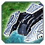
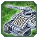
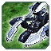
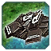
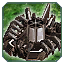
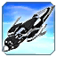
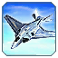

Balance
Дата обновления: 20.01.2025
Все меняется!
Всем Привет! Это наш ГАФ баланс. Все внесенные изменения могут быть изменены повторно.
Дисклеймер: Внесенные здесь изменения могут быть нарушены или иметь непредвиденные побочные эффекты, если вы с чем-то столкнетесь, пожалуйста, сообщите об этом в отдел баланса на
сайте.
Игровые Баги репортить сюда
Канал на сервере GAF Discord
Все изменения, которые в настоящее время внесены в GAF, позволяют нам оценить новый баланс в реальных играх.
--SupremeKiska и Isakentyi Баланс Команда
О балансе
Основное
В чем суть:
На нашем сервере, играя в баланс от ФАФ, мы все чаще замечаем, что игровой процесс склоняется к “потным” ладдерным играм с унылым геймплеем. Фановые юниты, больше не фановые и "убиты",
а расы были переработаны или чрезмерно усилены, что, на наш взгляд, отражает симпатии самих балансеров ФАФ (Кибрано/Серафимофилия). С каждым патчноутом игра меняется до неузнаваемости,
иногда в лучшую, иногда в худшую сторону, но в целом уже не кажется такой, как раньше. “Идеальный баланс” это вообще не про нас. Поэтому мы, Isakentyi и SupremeKiska, хотим сделать
игру более веселой и фановой, а также, возможно, улучшить ее геймплей. Мы не претендуем на звание убер-знатоков игры и не знаем, какой игра должна быть на самом деле. Но вместе с вами
мы постараемся создать такую игру, которая устроит нас всех. Мы хотим исправлять юнитов, и делать их играбельными, чтобы T2 стадия задерживалась дольше, чем ради 5-ти инженеров..
Супер-пупер финтифлюшки, Т2 ахвассы и "свинарники" не рассматриваются. Будем делать лорно, играбельно, чтобы юниты из сетапа не выпиливались. Мы ждем ваших мнений и предложений в
Discord. Начнем пока с малого. Ниже представлен список внесенных изменений.
Land
Т1 Ленд
 Аврора
Многострадальный юнит. Медленый, не поворотливый, да, стреляет далеко, да, ховер, но его догоняют и на этом преимущества закончились. Когда то давно Аврора не промахивалась. Это мы
возвращать не станем. В место этого мы дали Авроре возможность стрелять двумя снарядами с меньшим уроном. Она в принципе осталась той же,но стала веселее.
Т1 Зенитки
Ранее, было не понятно, почему зенитные установки первого уровня, за исключением фракции Кибран, не могли атаковать наземные юниты. Теперь это ограничение снято, и все зенитные установки
первого уровня могут атаковать наземные цели. Мы сделали им смешной урон, так что это сильно не повлияет на картину,но освежит стиуацию. Всегда можно отказатся от этой идеи. Не по
пробуем не узнаем.:)

Стрелец

Чертополох
 Я-истл
Я-истл
Т2 Ленд

Вагнер
Вагнер был ни рыбой ни мясом. Теперь он рыба. Изменен урон от торпед. Этот юнит теперь отличная преграда для доминирующего флота.
Эксперементалки

Скатис
Скатис. Мы эксперементировали с ним раньше и пошло все в сторону "Идеального баланса". Скатис стрелял очень быстро и очень больно. Мы продолжаем эксперементы и поэтому скатис теперь
стреляет слабее,но так же быстро.
AIR
Т2 Аир
 Мерси
Мы вместе с вами поиграли в новых Мерсей, которых перебалансили на ФАФе и пришли к выводу,что они неиграбельны. Мы решили оставить эти мерси,но с поправками. Мерси атакуют так же как
новые,но урон был возвращен как и прежде 2400 за 3 тика в сумме и снизили НР.
-
Здоровье юнита
- Здоровье:
90 15
- Максимальное здоровье:
90 15
-
Урон
- Урон за тик:
50 800
- Количество тиков:
10 3
- Радиус Урона:
7.5 3.5
 Корсар
Корсар
И так Корсары. Много лет назад этот юнит был грозой всех нубасов, его боялись, его уважали, им восхищались и ненавидили. В нынешнем балансе он является жалкой тенью былого величия. Нас
это не устраивает, потому что титул имбы занимает Нота. Чтобы у игроков выбор хараса не ограничивался одной только Нотой, и условия не диктовали игрокам играть только за Серафим, мы
апнули Корсары.
-
Урон
- Урон:
150 200
- Количество Ракет:
8 6
Урон в сумме тот же, но ракеты бьют больнее
-
Точность
- Случайность стрельбы
0.8 0.4
- Допустимая неточность
6 4
- Радиус Урона:
2 3
Т3 Аир
 ОСА
Фишка кибран это стелс. Фишка ОФЗ - джемминг( ложные цели). У ОФЗ джемминг присутствует на всех Т3 аир юнитах,кроме АСФ (транспортник не считаем), нам это кажется нелогичным, поэтому
теперь будет!